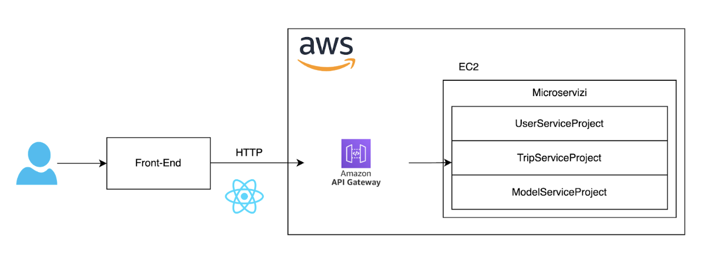
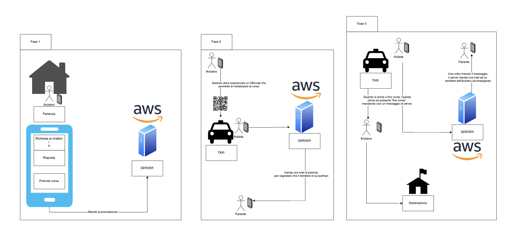

Presentazione
Taxi sociale è un'app sviluppata per favorire lo spostamento di persone che non possono mettersi alla guida.
È stato pensato per favorire la user experience, rendendo il processo di richiesta di un taxi sociale semplice e veloce.
Repository GitHub:
Architettura
L'architettura del sistema è raffigurata nel seguente diagramma:
I servizi vengono eseguiti su macchine AWS, raggiungibili tramite API Gateway. I servizi sono:
- UserServiceProject: gestisce l'autenticazione e la gestione degli utenti.
- TripServiceProject: gestisce la gestione delle tappe.
- ModelServiceProject: gestisce la gestione dei modelli.
Di seguito è riportato un diagramma che comprende 3 fasi, rappresentanti un caso d'uso del sistema.
Spiegazione del diagramma:
- Fase 1: L'utente prenota una corsa attraverso il chatbot.
- Fase2: l'utente scannerizza il QR code presente nel veicolo, e in questo modo viene automaticamente inizializzata la corsa e mandata un'email di localizzazione al parente.
- Fase3: una volta arrivati a destinazione, l'anziano scende dal veicolo, e l'autista clicca sull'apposito pulsante di "fine corsa". Di conseguenza viene terminata la corsa dal punto di vista del funzionamento dell'app, e viene mandata un'altra eamil di localizzazione al paretnte dell'anziano.
Funzionalità
In questa sezione verranno spiegate la varie funzionalità dell'app, con le relative schermate.
Demo
Team
Luigi Roberti
luigi.roberti@studenti.unisalento.it
Cristian Golia
cristian.golia@studenti.unisalento.it